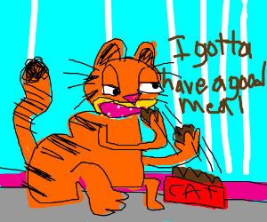

Mondays, amirite?

Calories and Carbs, the Casserole
Apparently lasagna is a type of pasta. I always thought of pasta as either being long noodles or just a bunch of smaller shapes. But I suppose there's no reason it can't be sheets.
I'm not sure if cats can actually eat this stuff.
Ingredients
- 1 box of Stouffer's frozen lasagna
- microwave
Steps
- open the Stouffer's box
- throw away the packaging
- put the frozen lasagna in the microwave
- heat it for 8 minutes
- burn your mouth on the outside of the lasagna while the inside is still frozen
- give it to your cat